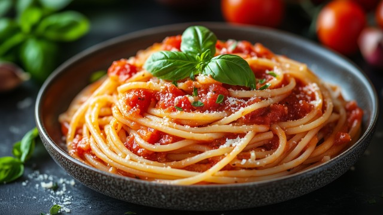

Home
Tomato sauce pasta

Description
Tomato sauce pasta (or better to say pasta al pomodoro) is that kind of dish that is good for every
occasion: lunch, dinner, summer, winter, whenever you are willing to cook or not.
The secret of this recipe is the simplicity, but that is also his burden: with a simple recipe, if you have
poor quality ingredients, also your result will be poor. So I encourage you before you try cooking this classic
of the italian tradition to get some ingredients of good quality, especially... pasta and tomatoes of course!
Ingredients (4 people)
- 300/400g of pasta of your choice (spaghetti for the classic version)
- 400g of fresh or canned tomatoes
- 2/3 cloves of garlic
- Extra virgin oliv oil
- Fresh basil
- Parmigiano Reggiano cheese (or Grana Padano)
Steps
- Put water to boil and in the meanwhile clean the garlic (cut it into small pieces for a more intense taste)
and cut the tomatoes into small pieces if you have them fresh.
- Put 4 spoons of extra virgin olive oil with the garlic into a pan with medium heat: attention not to burn
the garlic, it must never take any color! It should only give some flavour to the oil.
- After a couple of minutes add the tomatoes to the pan and put the pasta to cook (salt the water).
- Salt a bit the tomatoes and, if you are using them fresh, turn up the heat and smash them a bit.
Add some water of the pasta if they dry too much.
- Take the pasta out when still al dente (1-2 minutes before cooked) and put it directly into the sauce
- Finish cooking the pasta for the last minute with the sauce, adding a bit of pasta water if necessary.
- Turn off the heat and add a bit of olive oil and basil leaves.
- Put on the dishes and voilà! You can add some small decorative basil leaves and parmigiano cheese on top.
"Classic spaghetti alla napoletana with fresh tomatoes and basil"
by Marco Verch is licensed under
CC-BY 2.0